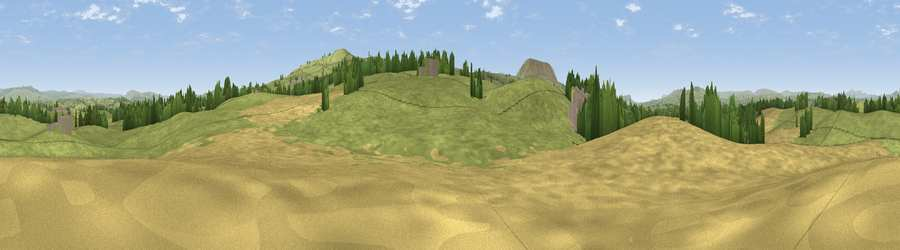

Cringlands Hill
#24465 in England · top 57% of its area beats it · near GisburnThe view, rendered

A 360° render of this exact spot computed from the terrain model, tree cover and land cover — summer colours, afternoon light, calibrated against photographs of famous viewpoints. Real trees, hedges and buildings will differ in detail.
The panorama
Grey silhouette: terrain skyline in each direction (720 bearings, Earth curvature and refraction included). Dashed green: skyline with trees (+15 m) and buildings (+8 m) as obstacles. Blue strip: how far the ground is visible on each bearing.
Where the view opens
Wedge length = distance to the farthest visible ground on that bearing (vegetation-aware). Rings at 10, 25 and 50 km.
What fills the view
74% grassland · 20% cropland · 4% woodland · 2% built-up
Angular shares of the visible panorama (visual magnitude), not map area. Landscape diversity 0.32 (0–1 Shannon).
Key numbers
More beautiful places nearby
The staircase of upgrades: each row has a higher view potential than everything closer. Driving times are estimates from straight-line distance, calibrated against real road routing — check an actual route before setting out.
| Place | Direction | Drive | Score |
|---|---|---|---|
| Bomber Hill | N · 1 km | ~4 min | 52.0 |
| Viewpoint near Barnoldswick | ESE · 2 km | ~5 min | 60.8 |
| Weets Hill | SE · 3 km | ~7 min | 69.3 |
| Viewpoint near Barley | SSW · 6 km | ~13 min | 76.3 |
| Pendle Hill | SSW · 6 km | ~14 min | 76.5 |
| Parlick | W · 24 km | ~40 min | 77.5 |
| Little Ingleborough | NNW · 28 km | ~45 min | 78.8 |
| Viewpoint near Ingleton | NNW · 29 km | ~46 min | 79.5 |
53.91836, -2.24861 · source: osm peak · position refined by local search. Computed location — check access rights before visiting.